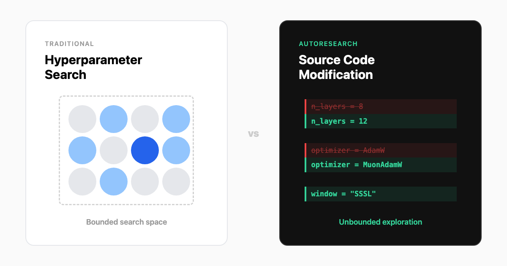
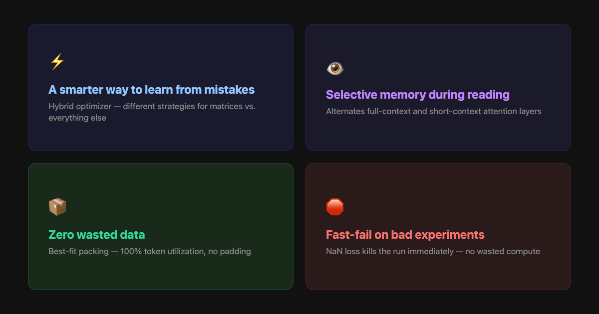
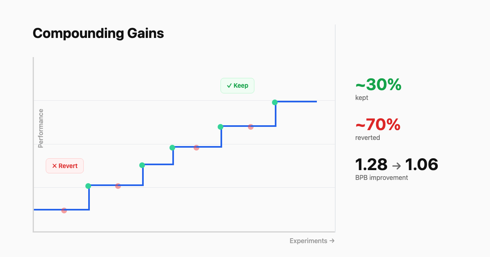
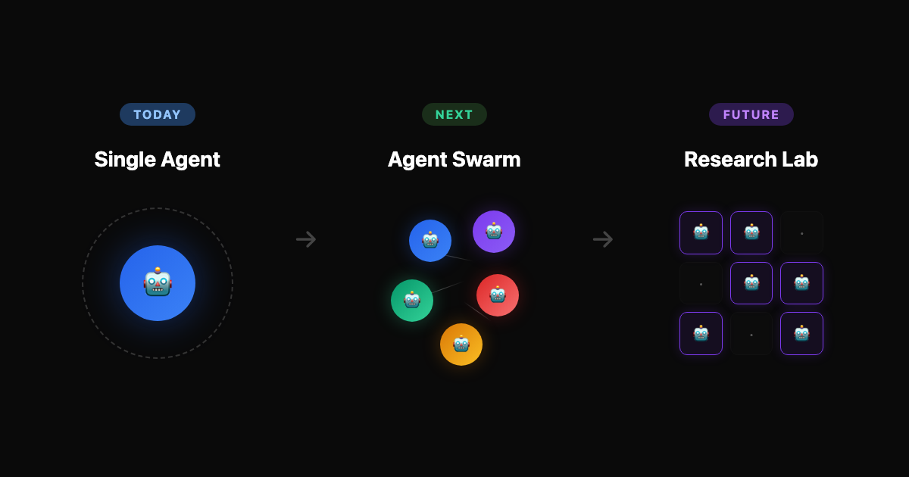

Give an AI agent permission to edit one file, a five-minute training budget, and a single instruction: "NEVER STOP." Karpathy built autoresearch on this premise — a loop that turns a single GPU into an overnight research lab. It works.
I think it's one of the more important things to come out of the AI tooling space this year (it's only March), and it deserves a clear explanation for people who aren't neck-deep in ML Twitter. It will certainly be cited as obvious in hindsight, a mark of a great product.
What is it
There's a training script for a small language model. An AI agent gets permission to modify that script — and only that script. Then it loops:
- Modify the code — architecture, hyperparameters, optimizer, model depth. Anything in the training script is fair game.
- Train for five minutes — defined by wall-clock time, not steps or epochs.
- Measure validation loss — specifically bits per byte (bpb), a metric that's independent of vocabulary size, so you can compare across different tokenizer configurations fairly.
- Keep or revert — if bpb improved, the change is committed. If not,
git reset. Clean slate. - Repeat — the agent's instructions literally say "NEVER STOP."

You get twelve experiments per hour. Roughly a hundred overnight. You go to sleep and wake up to a log of everything the agent tried and a model that's measurably better than where it started.
Not your grandpa's hyperparameter tuning
Grid search, random search, Bayesian optimization — they all search within bounds a human sets. You define ranges for learning rate, batch size, model width, and the system explores that box.
Autoresearch modifies source code. It can restructure the architecture, swap the optimizer, rewrite the training loop. No predefined search space. It operates like a researcher — read the code, form a hypothesis, change something, measure.

You have five minutes, Mr. Agent
If you measure by training steps, results are hardware-dependent — an H100 and a laptop yield incomparable data. Wall-clock time makes results portable. The agent discovers what's optimal for whatever machine it's on.
It also pressures efficiency. A bloated model that trains slowly loses to a lean one that converges fast. And five minutes means failed experiments are cheap — most ideas in ML don't work, so a system that tries a hundred overnight and keeps only the wins is exactly what you want.
Training code is Karpathy level

The baseline is ~630 lines of Python — minimal, but state-of-the-art:
- MuonAdamW hybrid optimizer — uses two different strategies to adjust the model's parameters during training. Muon (polar decomposition for orthogonality) handles the big weight matrices, AdamW handles everything else. Like having a different coaching style for sprinters vs. marathon runners on the same team.
- Sliding window attention — controls how much context the model considers when predicting the next word. Alternates full-context and local-context layers (SSSL pattern) so the model gets the big picture and local detail without paying full compute cost on every layer.
- Best-fit data packing — training data normally gets padded with empty space to fill batches evenly. Autoresearch packs documents together for 100% token utilization. Every byte the GPU touches is real data.
- Fast-fail on NaN — if the model's numbers explode mid-training (NaN loss), the run dies immediately instead of burning the remaining five minutes on a doomed experiment.
The agent experiments on a strong baseline. Improvements it finds are real — not artifacts of a weak starting point.
Expected value math
Most experiments will fail and that's great as this system is designed for it.
Failed experiments cost five minutes of GPU time and nothing else — the code reverts automatically. Successful experiments compound as each improvement becomes the new baseline for the following run.
- Over two days, the agent ran ~700 experiments and found ~20 real improvements. Stacked together, time-to-GPT-2 dropped from 2.02 to 1.80 hours — an 11% speedup. The agent caught oversights in attention scaling and regularization that Karpathy himself had missed. One community member documented their overnight run where 7 of 35 experiments succeeded, and the model improved by getting simpler.
- Shopify CEO Tobi Lutke ran it overnight and woke up to an agent-optimized 0.8B model that outscored his previous 1.6B — a 19% improvement in validation scores. His reaction was "OK this thing is totally insane." He then applied it to Shopify's Liquid template engine — 53% faster parse+render, 61% fewer object allocations. Not an ML model. A production codebase.

If 10% of experiments produce a gain, that's ten improvements per night, compounding on each other. Over a week, 70. Same math that makes CI valuable — small, frequent, validated changes accumulate into large differences. (Thanks calc 2, for making me take the area of a donut.)
The cost of failure is bounded and the value of success is cumulative.
What comes next
This is a single agent on a single GPU. The logical next steps I see are:

1. Parallel agents. Karpathy's next step is SETI@home-style collaboration: "The goal is not to emulate a single PhD student, it's to emulate a research community of them." Already happening — on March 8–9, 35 agents on the Hyperspace network ran 333 experiments unattended.
2. Memory-led exploration. Right now the agent proposes changes from general ML knowledge. Future versions will track what's been tried, what worked, and why — moving from trial-and-error toward directed research.
3. Longer time budgets. Some techniques only pay off after extended training. Expanding to 30-minute or hour-long runs opens up changes that need more time to converge.
4. Beyond language models. Modify code, measure outcome, keep or revert — this works anywhere you have a codified experiment and a metric. Lutke already proved it on Shopify's Liquid codebase. Community forks include an Apple Silicon MLX port and a Windows RTX fork.
Conclusions & take-off velocity
Recursive self-improvement is usually framed as theoretical or far-future. Autoresearch may just be a working prototype as the agent doesn't modify its own weights, but it modifies the training process that produces them.
The bottleneck in ML research has never been ideas but time to test them. This agent caught optimizations that a two-decade ML veteran missed. Not because it's smarter, it just had way more at-bats.
This doesn't replace researchers, but it does provide caffeine-charged never sleeping interns that run a hundred experiments while they sleep. You design the loop, set the constraints, evaluate the trajectory.
A for-loop with really good taste. The kind of project that looks small now, but is obvious in hindsight. One loop, one metric, one agent with permission to edit code. The rest is compute and time.